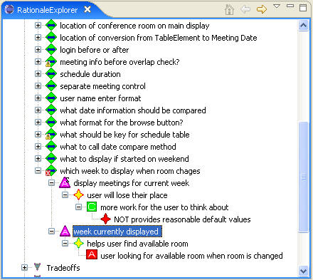
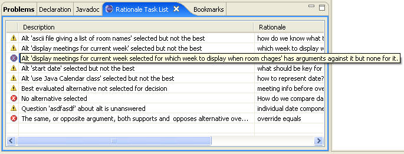

The rationale, shown in the following figure, indicates that the decision about what room to display when the room changes has an error. This is indicated by the red icon overlaying the decision icon.

The Rationale Task list, shown in the following figure, explains that the alternative that was selected, “display meetings for current week”, has arguments against it but none for it.

The user can find the code that selects which week is displayed by either editing the alternative to get the name of the code element or, more quickly, by finding the selected alternative in the Bookmark Display. Doubleclicking on the bookmark brings up the code in the editor. After making the required change, the maintainer should change the rationale to select the correct alternative and make sure it is associated with the code correctly.